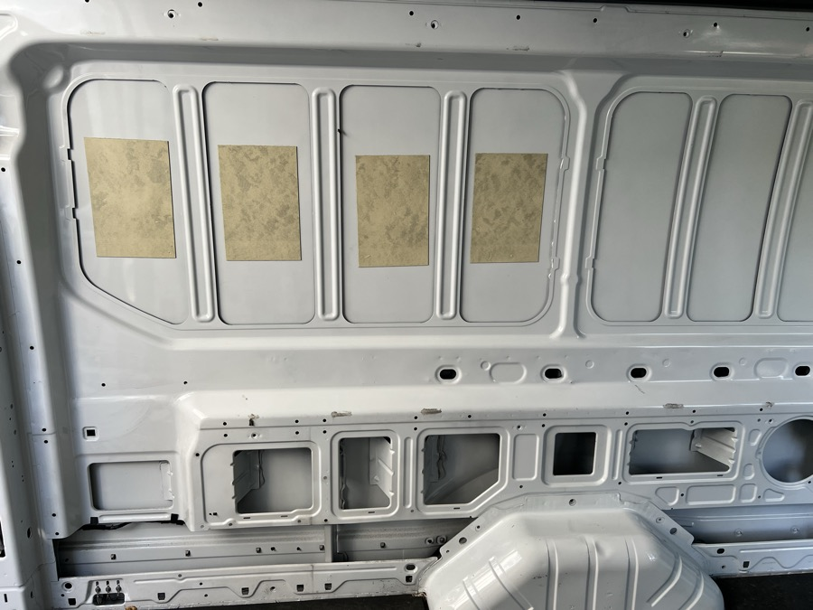
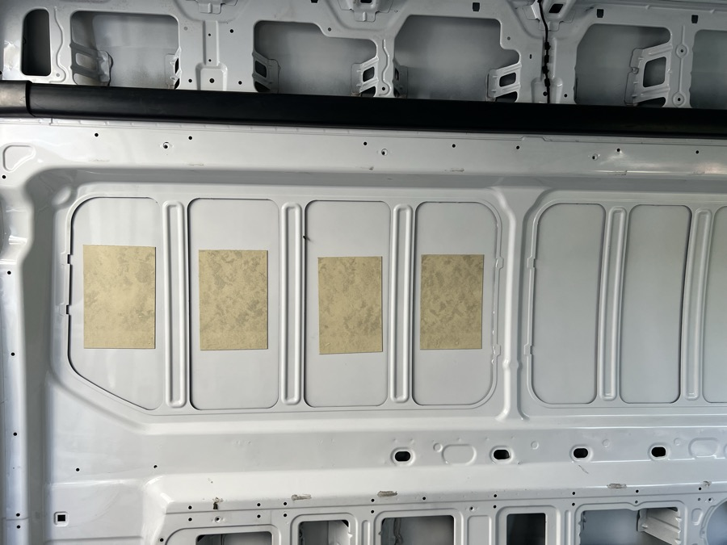
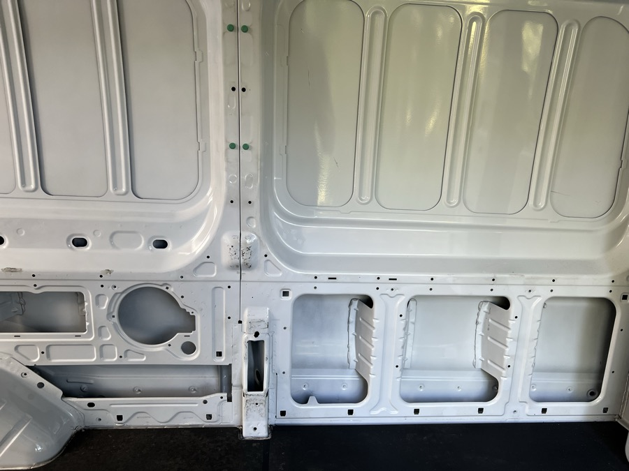
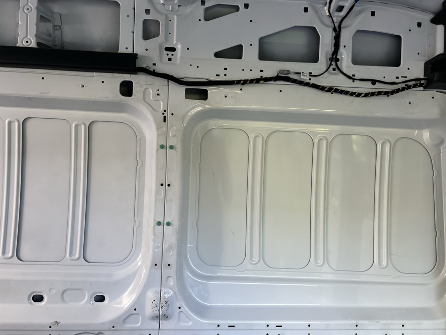
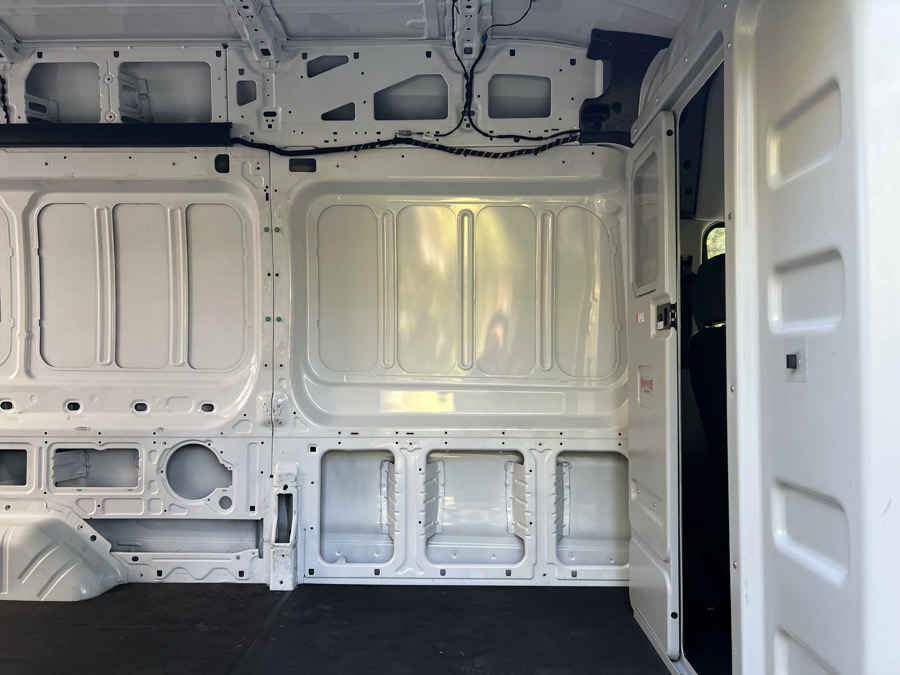

One diagram per side, to scale (6 px per inch), with a faint grid every 10 inches. The van's steel and its depths are on one map (the depth color map); the built items (bed, closet, dinette, cabinets) are on their own diagram below it. Anything measured from the cab end (the wheel well front, P11's end, the cab wall itself) may be off by 2 to 4 in, shown by the hatched band at the right. Nearly everything on the map is a measurement you gave me. Anything marked (est.) in the tables below is still a guess from the photos, and those are the only things left to measure.
Diagrams: A driver side depth map and furring layout, B driver side built items, C driver side bed and couch (side section), C2 driver side bed with a hinged leaf (day and night), C3 building the leaf, slots and legs, C4 the gear shelf over the battery (parts, steps and how it pulls out), D passenger side depth map, E passenger side built items, E3 shower curtain on three sides (the old tipping-pan version; the pan is fixed now), F looking down at both sides, G the ceiling covering (plywood, slats, lights, fan and air conditioning cutouts).
Interactive version: open and close the doors, tables, the bed and the shower pan with a click, and change any size.
Zoom: every diagram has + and − buttons in its top right corner; you can also hold Ctrl (Cmd on a Mac) and scroll, or pinch on a touch screen. Drag a zoomed diagram to move it, and press Reset to go back.
0 in: the body (pans, and inside every hole)1/8 in1 1/2 in2 1/2 in3 3/4 in7 in (wheel well)3 in at the top getting darker to 3 3/4 in (the top 19 1/2 in)2 1/2 in lightest, getting darker to 3 3/4 indepth not measuredred dashed line: the seam / pillar at about 98 in
Every hole (and every pan) reads 0 in, because inside it you see the body. The color around a hole is how far that steel is from the body: 3 3/4 in around the L and R holes and the band above the L holes, the top 19 1/2 in of the wall (around the T holes) shades from 3 in at the top to 3 3/4 in at the bottom, 1 1/2 in for the belt-line wall and around the cover plate CP (inside it, 0 in), the strip along the back (0 to 3 in from the back) is 3 3/4 in from the floor up, the 3 in left of P1 is 1/8 in and then it goes to 3 3/4 in toward the back (above 23 1/4 in up), and 3 3/4 in from 56 in to the cab, for everything under the 1 1/2 in band, and for the space between P7 and P8 (except the 3 in right of P7 and the 3 in left of P8 on the pan rows, which are 1/8 in like the other sides), which is 3 3/4 in from the floor all the way up and shades to 3 in at the top; from 15 in to 56 in (around L1 to L4) it shades from 2 1/2 in at the lightest, getting darker toward 3 3/4 in, 1/8 in for the ribs and the 1 1/2 in strips above and below the pans. The area right of P11, up to the cab wall, is 1/8 in. The gap between P4 and P5 is 1/8 in too. Hatched areas have no depth yet (around the ovals, B1 and B2). The steel behind the wheel well (around LO) starts at 2 1/2 in and shades darker with the rest toward 3 3/4 in; the area in front of it (around LP) is 3 3/4 in. The 1 1/2 in band steps in to 1 in at the back and at the cab end.
Dark brown strip: sits straight on the steel, no spacer (S1, S2, S3)Orange striped strip: needs a 3 5/8 in spacer at every dot (S4, S5, S6)Light tan strip: needs a small spacer, 1/4 to 5/8 in (S7, S8)Dark square: a 3 5/8 in spacer block (1 1/2 x 1 1/2 in, cut from 2x2) set at the dotLight dashed square: a 1/4 in (S7) or 5/8 in (S8) plywood shim
Vertical planks need strips that run sideways, so they cross every plank. Eight strips, 3/4 in thick and 1 1/2 in wide, with the planks fixed to them. The strips are spaced 9 to 14 in apart from the floor to the top, so every plank is held at least every 14 in. The "spacer needed" column is how much each strip has to be built up so its back sits on a common line 3 3/4 in off the body, the deepest steel on the wall (the lower wall and the top part). The planks then lie flat against the strips' fronts, 4 1/2 in off the body, with nothing sticking out through them. The wheel well sticks out 7 in, so it needs its own box built around it.
| Strip | Height (center) | What it sits on | Spacer needed | Blocks, shims or pads (at each dot) |
|---|---|---|---|---|
| S1 | 3 in up | the flat lower wall (3 3/4 in deep); stops at the wheel well, which sticks out 7 in and has to be boxed out | 0 (strip sits straight on the steel) | 7 adhesive pads, at 6, 17.75, 31.25, 82.94, 98.9, 119.35, 139.95 in from the back |
| S2 | 12 in up | the lower wall; it bridges the L, R and PO holes, so anchor it on the steel between them | 0; 1 1/4 in at the back, before 15 in | 11 adhesive pads, at 15, 30.75, 40, 54, 62, 72, 80, 96, 104, 119.35, 139.95 in from the back |
| S3 | 21 1/2 in up | the 3 3/4 in band above the L holes (19 1/2 to 23 in up), a solid line of steel the whole way | 0; 2 1/4 in left of 15 in (the 1 1/2 in blue area) | 11 adhesive pads, at 22, 34, 46, 58, 70, 78, 99, 110, 122, 134, 146 in from the back |
| S4 | 30 1/4 in up | the 1/8 in strip under the pans (29 1/2 to 31 in up) | 3 5/8 in | 12 spacer blocks, at 10, 17.75, 31.25, 44.5, 58.6, 71.31, 82.94, 98.9, 114.94, 127.25, 139.75, 147 in from the back |
| S5 | 43 1/2 in up | the 3 in ribs between the pans (1/8 in); it bridges the pans between them | 3 5/8 in | 10 spacer blocks, at 17.75, 31.25, 44.5, 58.6, 71.31, 82.94, 98.9, 114.94, 127.25, 139.75 in from the back |
| S6 | 57 1/4 in up | the 1/8 in strip above the pans (56 1/2 to 58 in up) | 3 5/8 in | 12 spacer blocks, at 10, 17.75, 31.25, 44.5, 58.6, 71.31, 82.94, 98.9, 114.94, 127.25, 139.75, 147 in from the back |
| S7 | 66 in up | the top part, below the T holes (about 3 1/2 in deep there) | about 1/4 in | 10 shims, at 17.75, 31.25, 44.5, 58.6, 71.31, 82.94, 98.9, 114.94, 127.25, 139.75 in from the back |
| S8 | 76 3/4 in up | the top part, above the T holes (about 3 in deep there) | about 5/8 in | 10 shims, at 10, 24, 36, 58.6, 76, 93, 98.9, 114, 127, 140 in from the back |
Attachment points. Each white dot on the drawing is a place where the strip is fixed to the van. On S1, S2, S3, S7, and S8 a dot is an adhesive pad (structural adhesive or VHB tape) straight onto the steel, placed on solid steel and kept clear of the holes. On S4 and S6 a dot is a 3 5/8 in spacer block bonded to the 1 1/2 in strip of steel, with the strip screwed to the block. On S5 a dot is a spacer block bonded onto a rib, so S5 touches the van only at the ten ribs, 13 to 16 in apart, and spans the pans between them. This is general van-build practice, so test the adhesive bond on your own steel before you rely on it.
Rough materials, counting 154 in per strip with S1 stopping at the wheel well: about 100 ft of 3/4 x 1 1/2 in strip. Spacer blocks (3 5/8 x 1 1/2 x 1 1/2 in, from 2x2) go at every dot of S4, S5 and S6: 12 + 10 + 12 = 34 on this side; S7 and S8 take 10 + 10 thin shims. This is a starting layout from your measurements, so check the strip positions against where you want shelves, cabinets, and outlets before you glue anything.
Battery. The 21 x 10 x 9.5 in battery (280 Ah, taken as 12 V) sits on the floor next to the wheel well, on its aisle side, 1 in from the closet (52 to 73 in from the back). The well sticks out 7 in and the battery adds 10 in, so the two together reach 17 in into the van, which leaves 10 in of the bed's 27 in depth for storage. The battery is 9.5 in tall, so it clears the underside of the bed deck (16 in up, after the couch was raised 3 1/2 in for the gear shelf) by 6 1/2 in: that room holds the pull-out gear shelf (diagram C4) with the inverter, the DC-DC charger and the shore charger on it, 1 in over the battery.
Closet. One rod runs along the wall inside the closet (74 to 89 in from the back, 15 wide by 25 deep) at 71 in up, about 11 in long (76 to 87). The hangers sit across the 25 in depth, 1 1/2 in apart. Clothes up to 36 in long hang from it (the shoulder is 3 1/2 in below the rod), down to 31 1/2 in up; under them, starting 1 in lower, are four drawers (1 to 30 1/2 in up, each 7 5/16 tall by 12 1/2 wide by 22 deep inside). One door above the drawers, 14 3/4 by 43 11/16, opens on the bed-side hinge; the drawers pull out 21 in, which leaves about 1 in of the aisle, so open them while standing there.
The bed, closet, dinette and wall cabinets, drawn on their own so they do not cover the wall details above. They were measured from the rear doors earlier; check whether they use the same zero as the wall numbers (about 6 in in from the rear edge).
By day the seat is at 22 1/2 in: a 16 3/4 in deck with the 3/4 in leaf lying on it, face down (top at 17 1/2 in), and a 5 in seat cushion (it was 6: 5 in keeps a seated head 1 1/2 in under the wall cabinets after the raise). The couch was raised 3 1/2 in (the seat was 20, now 22 1/2) so the gear shelf, with the inverter and the two chargers on it, fits over the battery (diagram C4). At night the leaf is flipped out level with the deck, so the bed is at 21 3/4 in (diagram C2). The back cushion is 5 in thick, 20 in tall (to 42 1/2 in up), and leans back 12 degrees into the wall. The seat in front of it is about 21 in deep (26 in couch minus the cushion's base). The couch sits on a base (two end panels, a ledger on the wall and a rail under the front edge of the deck, the small square under the front of the deck) that supports its ends and front. The bed makes up with a hinged leaf: a 20 in leaf (3/4 in plywood, 74 in long, no rails) is hinged on the front edge of the deck and lies back flat on it, face down, under the seat cushion, by day; the dark strip in it is one of the four legs, folded into its slot, so nothing sticks out. For the bed you lift the seat cushion, flip the leaf out until it is level with the deck, fold down its four legs (12 5/8 in of flat bar plus a 3 1/2 in screw-out foot), put the seat cushion back and lay the back cushion, as one 20 in piece, on the leaf: 26 + 20 = 46 in wide (diagram C2, with the build in C3). There are no rails or slides, so the space under the base stays free (16 in tall, with the gear shelf over the battery). The bed is drawn 26 in deep measured from the planks; the wheel well and battery are only under the part of the bed where the well is, and the well's 7 in is measured from the wall steel (confirmed), which is 3 3/4 in off the body, so it sticks out 10 3/4 in from the body.
| Height up | Steel off the body | Room behind the planks (4 1/2 off) | The back's rear edge |
|---|---|---|---|
| 22 1/2 to 23 1/4 | 3 3/4 in | 3/4 in | 0 to 0.2 in behind the planks |
| 23 1/4 to 29 1/2 (blue band) | 1 1/2 in | 3 in | 0.2 to 1.5 in |
| 29 1/2 to 31 (yellow strip) | 1/8 in | 4 3/8 in | 1.5 to 1.8 in |
| 31 to 42 1/2 (pans) | 0 | 4 1/2 in | 1.8 to 4.25 in (1/4 in short of the body at the top) |
Seen from the aisle, looking at the driver side wall. Day (left): the 20 in leaf lies back flat on the deck (deck top at 16 3/4 in), face down, under the seat cushion (leaf top at 17 1/2 in, seat cushion 17 1/2 to 22 1/2 in), and the back cushion (5 in thick, 20 in tall) stands against the wall (22 1/2 to 42 1/2 in up). The couch is 3 1/2 in higher than it was so the gear shelf fits over the battery (diagram C4). The seat is 22 1/2 in high and 21 in deep (the 26 in couch minus the 5 in cushion). Night (right): the seat cushion comes off, the leaf is flipped out on its hinge along the front edge of the deck until it is level with the deck, four legs (12 5/8 in of bar plus a 3 1/2 in screw-out foot) fold down out of slots in the leaf (one near each end and two between them, about 24 in apart, because the leaf is 74 in long), the seat cushion goes back and the back cushion lies on the leaf as one 20 in piece. The bed is 74 x 46 in (26 + 20) with its top at 21 3/4 in (the seat is 22 1/2 in by day, 3/4 in higher because the folded leaf sits under it); from the aisle only the low strip shows. There are no rails and no slides, so the space under the deck stays open at 16 in (the battery and wheel well stay where they are, with the gear shelf over the battery). The legs, the hinge and the slots are on C3, and the flip is animated on the interactive page (click the couch, or open the Bed, from the end view).
Section from the rear (wall on the left, 0 is the finished wall face). Base: the couch sits on a base of two end panels, a ledger on the wall and a 3/4 x 1 1/2 in rail under the front edge of the deck; that supports the couch ends and front (nothing slides under the deck, so the rail is free to go there). Leaf: 3/4 in birch plywood, 20 x 73 3/4 in, edges banded, about 24 lb, a plain flat slab with no rails, so folded back it leaves no ridges under the seat cushion. Hinge: a 74 in continuous hinge, 1 1/2 in leaves, on the top faces of the deck and the leaf, #8 x 5/8 in screws every 3 to 4 in, a 1/8 to 3/16 in gap so it folds flat both ways. Legs: four 3/8 x 1 1/4 in aluminum flat bars, 12 5/8 in long, each with a threaded rubber foot that screws out about 3 1/2 in (the couch is 3 1/2 in higher than it was, so the leg is 16 1/8 in from pin to floor; the foot is a 3/8 in stud that screws into the bar's end; folded, only the bar lies in the slot), each lying in a through-slot (1 1/2 x 13 in) cut in the leaf, on a 1/4 in stainless pin through the plywood either side of the slot, 3 in from the free edge; folded, the leg is inside the plywood, so the leaf is flat on both faces. The pin is 3 in in from the free edge, so the leg lands 43 in out from the wall (the bed is 46) and the front 3 in of the leaf overhangs it. The two end slots are 1 in in from the ends of the leaf (the sides) and the other two are evenly between them (the four are about 24 in apart, so the free edge never spans more than that; with three legs it spanned 35 in); each slot leaves about 4 in of solid plywood at the hinge end. A stop (the end of the slot) keeps the leg from passing vertical and a ball catch or magnet holds it up. Latches: two turn buttons or magnetic catches hold the leaf folded back while driving. Shower: the leg at the rear end of the leaf lands 43 in out, 1 in short of the front edge of the shower pan (44 in) with the pan down, and the leaf edge hangs 2 in over the pan; the pan is tipped up anyway when the bed is made up. Loads (rough): two adults (350 lb) put about 150 lb on the 20 in leaf; with the legs down about 75 lb of that goes through the hinge (about 3 1/2 lb a screw) and the legs take about 19 lb each. A 200 lb person sitting on the free edge between two legs puts about 100 lb on each nearest leg. With the legs up the same person is a lever of about 4,000 in-lb on the hinge, which is several hundred pounds a screw and more than a #8 screw holds in plywood, so the legs go down before anyone sits on the free edge. A 3/8 x 1 1/4 in flat bar buckles at about 3,500 lb, so the bar is not the weak point; the pin, the slot walls and the hinge screws are.
The inverter, the DC-DC charger and the shore charger all sit on one tray over the battery. The tray is 1/2 in plywood between two 3/4 x 2 1/2 in end rails, on two 18 in full-extension slides: one on the closet's end panel (74 in from the back) and one on a plywood divider just west of the wheel well. Its louvered face is flush with the couch front, so you pull the face and the whole shelf comes out 18 in into the aisle, with every unit and terminal open from above. The battery stays on the floor under it, with a 1 in gap for its terminals and lugs. The stack, from the floor: battery 9 1/2, gap 1, tray 1/2, the tallest unit (the DC-DC) 4 1/2, air 1/2, which is the 16 in under the deck; that is why the couch was raised 3 1/2 in. The front rail of the couch lifts out across the opening, because the units are taller than the 1 1/2 in under it.
Parts and cut list (all sizes in inches; the same numbers as the interactive page, with the interactive page's 1/16 in rounding):
| # | Part | Material | Cut size (in) | Qty | Notes |
|---|---|---|---|---|---|
| 1 | Tray | 1/2 in birch plywood | 31 13/16 x 17 1/2 | 1 | the floor of the shelf; the long way runs along the wall; saw it square (check the diagonals) |
| 2 | End rails | 3/4 x 2 1/2 in hardwood (a 1x3 on edge) | 17 1/2 long | 2 | glue and screw to the tray ends (#8 x 1 1/4 every 3 in), bottoms flush with the tray; the slides screw to their outer faces |
| 3 | Rear lip | 3/4 x 3/4 in hardwood | 31 13/16 | 1 | glued on top of the tray's rear edge between the rails; stops the units sliding back and stiffens the edge |
| 4 | Face | 3/4 in plywood, louvered (or a vented panel) | 33 5/16 x 4 1/4 | 1 | screwed through into the front ends of the rails and the tray edge; flush with the couch front; a 1 1/2 in pull handle or two finger holes; louvers for the fans |
| 5 | Slides | full-extension, side mount, ball bearing, 18 in, 75 lb or more a pair | 1 pair (one slide each end) | the fixed member goes on the divider and on the closet end panel; the moving member on the rail face | |
| 6 | Divider | 3/4 in plywood | 16 x 25 1/4 | 1 | stands on the floor from the wall to the couch front at 38 5/8 to 39 3/8 in; screwed to a 3/4 x 3/4 cleat on the floor and one under the deck; west of the wheel well (42 in) and 4 in past the lawn chairs |
| 7 | Lift-out front rail | 3/4 x 1 1/2 in hardwood | 34 5/16 | 1 | replaces the couch front rail across the opening (14 1/2 to 16 in up); rests in notches in the divider and the closet end panel and carries the front edge of the deck; lift it out before you pull the shelf |
| 8 | Lower panel | 3/4 in plywood, louvered | 10 1/4 x 34 5/16 | 1 | fills the couch front under the shelf; on turn buttons, so the battery is reachable |
| 9 | Hardware | screws #8 x 5/8 for the slides (about 24), #8 x 1 1/4 for the rails and the face, wood glue, #10 pan head screws and washers to hold each unit down through its mounting ears, cable clamps, adhesive-lined heat shrink, 4 turn buttons |
How to build it, in order:
Not settled: the exact slide model (check its thickness and height against the 1/2 in and 1 3/4 in drawn here), the battery's real terminal height (1 in of gap assumes right-angle lugs), the real weights of the two chargers (28 lb is a guess apart from the inverter's 7.7 lb), where the cables enter the closet end panel, and the front rail's support at its notches. The couch is now 3 1/2 in higher and the cushions are 5 in (they were 6): a seated 6 ft head is 1 1/2 in under the wall cabinets, tight but not touching.
This wall is the same as the driver side, with a few adjustments you will tell me about. Until then every dimension is the driver-side one: pans, ribs, holes, ovals, the lower wall, the wheel well and all the depths. The adjustments are listed below as they come in. The sliding door is the one thing that cannot match, so the area behind it is left empty (51 in wide, 104 to 155 in, up to 58 in; its rear edge at 104 in is measured, the width and height are not).
0 in: the body (pans, and inside every hole)1/8 in1 1/2 in2 1/2 in3 3/4 in7 in (wheel well)3 in at the top getting darker to 3 3/4 in (the top 19 1/2 in)2 1/2 in lightest, getting darker to 3 3/4 indepth not measuredred dashed line: the seam / pillar at about 98 in
The passenger wall uses the same eight strips and the same dots as the driver side (S1 to S8), changed only for the sliding door and the two nooks. The nook frames V1 to V4 are 3/4 x 1 1/2 in vertical strips that finish the planks beside each nook, hold the nook lining, and carry the shelf in the counter nook. All four run from S4 (31 in) up to S6 (56 1/2 in); below 38 in the counter nook frames sit behind the countertop. The low passenger-side holes (CP, S1, L2, L3) were checked against the dots: no dot lands inside any of them. Spacer blocks on this side: S4 8, S5 4 (the middle piece only), S6 8, and 3 each under V1, V2 and V3, 29 in all; shims: S7 7 and S8 10.
Dark brown: sits on the 3 3/4 in steel, no spacer (V4 and the two S5 ends)Orange striped: 3 5/8 in spacer at every dot (S4, S5 middle, S6, V1 to V3)Dark square: a spacer block (3 5/8 x 1 1/2 x 1 1/2 in) set at the dotLight dashed square: a thin shim (S7, S8)
| Strip | Where | Change from the driver side |
|---|---|---|
| S1 to S4, S6, S7 | stop at the door opening (104 in) | There is no wall behind the sliding door (51 wide, 67 tall, measured), so these strips end at 104 in and the dots past 104 are dropped. S7 (65 1/4 to 66 3/4 in up) is inside the 67 in opening, so it stops too. Only S8 (76 in up) carries on above the door. |
| S4 | below the shower nook | Its top edge (31 in) is the bottom of the counter nook. The shower nook is 16 in tall (38 to 54 in up), so its floor is 7 in above S4 and needs its own cross piece (3/4 x 1 1/2 in, top edge at 38) between V1 and V2. No change to the strip. |
| S5 | cut at both nooks | S5 (43 1/2 in up) crosses both nooks, so it is removed there. It now runs 0 to 11 in (to the rear frame V1 of the shower nook, dots at 2 and 9 in; the first 6 in sit straight on the 3 3/4 in steel, then it is on spacers over pan P1: check where the spacers start), 31 1/4 to 74 1/2 in (dots at 32, 44 1/2, 58.6 and 71.31), and 94 3/4 to 104 in (dot at 98.9, on the 3 3/4 in steel between P7 and P8, no spacer). The dots at 17.75 (shower nook) and 82.94 (counter nook) are dropped. |
| S6 | above both nooks | Its bottom edge (56 1/2 in) is 2 1/2 in above the tops of both nooks (54 in), so each nook needs its own top cross piece (3/4 x 1 1/2 in, bottom edge at 54), between V1 and V2 and between V3 and V4. No change to the strip. |
| V1 | shower nook, rear end | Vertical frame 11 to 12 1/2 in from the back (the nook is now 12 1/2 to 29 3/4), 38 to 54 in up; it stands on spacers on pan P1 (6 to 16), not on a rib, so check the spacers sit flat (3 dots). |
| V2 | shower nook, front end | Vertical frame 29 3/4 to 31 1/4 in from the back, 38 to 54 in up; on spacers on the rib between P2 and P3 (3 dots). |
| V3 | counter nook, rear end | Vertical frame 74 1/2 to 76 in from the back (the nook is now 76 to 93 1/4), 31 to 56 1/2 in up (down to S4, behind the countertop, where it gives the back edge of the counter something to fasten to); it stands on spacers on pan P6 (73 to 81 1/4), not on a rib, so check the spacers sit flat (3 dots). |
| V4 | counter nook, right end | Vertical frame 93 1/4 to 94 3/4 in from the back, 31 to 56 1/2 in up (down to S4, behind the countertop); sits straight on the 3 3/4 in steel between P7 and P8, no spacer (3 dots). |
Drawn from the sizes in your notes, as seen from inside the van (cab on the left). Two 4 in tall drawers side by side (boxes 13 in wide and 20 in deep, 59 1/4 to 72 1/4 and 73 3/4 to 86 3/4, 31 1/4 to 35 1/4 in up, a 1/2 in divider between, the silverware tray in the left one) hang under the counter in the flat part, and under them, on the back side, three more 13 in wide, 20 in deep drawers: a 5 in box (26 to 31) over two 7 1/2 in boxes (17 1/2 to 25 and 9 to 16 1/2) on their own shelf at 8 to 8 3/4 in up, 1/2 in over the wheel well (7 1/2 tall); they run the full 20 in back to the wall over the well (a 3/4 in front brings each to 20 3/4 of the 21 in cabinet). The cab-side column under the top drawer holds the trash can instead of drawers: a 13 gallon kitchen can, 12 wide x 16 deep x 24 tall (74 1/4 to 86 1/4 in from the back, 1 1/2 to 17 1/2 in out from the wall, 4 3/4 to 28 3/4 in up) on a pull-out tray with full-extension slides (a 3/4 in tray and 1/2 in slides under the can, so its bottom is 4 3/4 in up and the tray rides about 1/8 in over the wheel well edge, 3 3/8 in tall at the edge of the tray), with the divider beside it down to the floor and 2 1/2 in under the top drawer above it; the slides carry it out 19 in so a bag can be lifted out clear of the top drawers, which leaves 3 3/4 in of aisle across from the closet at the tray (6 1/2 in at the can) while it is out (a latch keeps it shut while driving). The grey water tank is not here because it goes under the van; the fresh water tank (dashed blue, 35 x 16 x 10 in lying flat, about 24 gal; it was 41 long until the cab-side column needed the floor for the trash can) is on the floor at the sink end against the cab-side end panel, partly in the sink cabinet and partly in the open area beside it, from 87 1/4 to 122 1/4 in (it fits the 16 1/4 in clear inside the sink cabinet door at the sink end, 17 in deep with the door, with 1/4 in to spare), a paper towel roll recessed into the angled front at 91 to 103 in (29 3/4 to 35 1/4 in up) and the hot water tank (dashed red, 14 in along the wall, 14 in deep and 13 in tall, holds about 4 gal, the heater weighs 2 lb, 120 V and 1,440 W) sits on a 3/4 in shelf over the fresh water tank (6 in above its top) at 87 1/4 to 101 1/4 in (16 3/4 to 29 3/4 in up), just before the sink cabinet and at the end of the drawers, with its hot and cold fittings and the relief valve at its back in a 1 5/8 in gap to the wall (so its front is 15 5/8 in from the wall, which fits the 16 3/4 in the angled front leaves inside the door at its sink end, with about 1 in to spare); there is no sink pipe: the sink drains into a jug standing on the fresh water tank under the sink (a 5 gallon water bottle, 19 1/2 tall and 10 3/4 across, standing on the tank top at 10 in up; the dashed blue box is the room under the sink, 20 1/2 in tall, so 1 in is left above the bottle; the 7 1/2 in sink depth is a guess). The wheel well matches the driver side, and the sliding door is not measured. The sink cabinet (103 to 123 in) falls almost entirely inside the sliding door opening (104 to 155 in, 51 wide and 67 tall, measured), which you said is intended. The passenger wall cabinet was removed. Everything is measured from the same zero, 6 in in from the back.
Nook. The nook (brown dashed) is the recess of pans P6 and P7 behind the countertop, open above the counter: 76 to 93 1/4 in from the back (17 1/4 in long; it was 58 to 93 1/4, then 78 to 93 1/4, then 2 in wider on the rear side), 38 to 54 in up (16 in tall, its top level with the bottom of the TV) and about 4 1/2 in deep, from the body to the planks (4 3/8 in over the ribs). The part of P4 behind the fridge (46 to 58 in) is not usable. The TV (bottom at 54 in) sits right on top of the nook's end, so they do not overlap. For storage, the drawing shows a 3/4 in shelf at 45 1/2 in up and two tiers of quart canning jars (3 3/4 in wide, 7 in tall with the lid), 4 jars a tier, 8 in all, about 24 lb. The bottom tier sits on the countertop. The dashed lines across the fronts are elastic cords that stop the jars sliding out; the top tier has about 3/4 in under the nook top.
Shower nook. The shower has its own nook (brown dashed, in the wet bath): the recess of pans P1 and P2, 12 1/2 to 29 3/4 in from the back (17 1/4 in long, the same size as the counter nook), 38 to 54 in up (16 in tall, level with the counter nook) and about 4 1/2 in deep. It needs a waterproof lining (tile or a sheet panel) and a slight slope to the front so water drains out. To keep things from falling out it has a 1 1/2 in lip along the front of the floor (cut a small gap or notch at one end so water drains), and you can add a stainless or plastic rail or a strap across the front about 5 to 6 in above the floor for tall bottles; the interactive page has the lip as a size you can change.
Fold-out table. At the cab-side end of the sink cabinet (123 in), a board 29 in long (123 to 152), 15 in deep (the counter is 17 deep) and 3/4 in thick is hinged on the end of the cabinet at 29 in up. Open, it reaches toward the passenger seat, so the seat turned to face the back sits behind a table; closed, it hangs down against the cabinet end (dashed) and takes about 3/4 in of the 31 in entry. A folding brace carries it, because a 29 in cantilever on a 17 in cabinet end is a long lever: a diagonal arm hinged on the cabinet end (13 in below the board) that swings up and locks under the board 15 3/4 in out; a floor leg at the free end would be where the rotated seat's knees and shins are. Open, it closes off the entry from the sliding door (the rear doors still work). 29 in matches the dinette table; a seated table is about 10 in above the seat cushion, so set the height from the cushion once the swivel seat is chosen (38 in would be counter height but is too high for a seated person unless the cushion is about 27 in up).
Foot ledge. Under the table, a shelf 13 in long (123 to 136, so its outer edge is 13 in from the cabinet end), 17 in wide (the cabinet depth) and 3/4 in thick, flat with no raised edge, is hinged on the cabinet end with its top at 8 1/2 in up; folded up it sits flat in a 3/4 in recess in the end panel (dashed), behind the folded table, so the table goes up first and the ledge down after it. It is held by a small folding brace and only carries the weight of your legs. The base of the cabinet is full (the fresh water tank, floor to 10 in, 16 deep), so a ledge that slides out of the base does not fit. About 20 in is left between the ledge and the underside of the table. The cab passenger seat cushion is 17 in up, so the ledge top is 8 1/2 in below it.
Two flexible plastic curtains, like a home shower curtain, hang free from a rod at the ceiling on three sides, and slide around on it (left: looking down at the 36 x 24 in pan). The rod runs 1 1/2 in inside the pan's edge, 33 in across the front and 22 1/2 in down each end, and the two curtains overlap 6 in in the middle of the front. The only rod is the one at the ceiling; there is no rod in the hem: the bottom is free, with small weights (a light stainless chain or sewn-in weights) that keep it inside the 3 in curb in use. Right: from the rear, along the wall.
The toilet. The Reliance Fold-To-Go (14 1/2 in square and 14 1/2 in high, a folding seat on four legs that holds a bag) stays set up on the pan at the cab end, sideways, with its back against the wall to the fridge (20 3/4 to 35 1/4 in from the back). That leaves 20 3/4 in of the pan in front of it to stand and shower, and 4 3/4 in each side of it. It gets wet when you shower: wipe the seat. The drain is in the middle of the standing part (8 5/8 in along, 12 out from the wall), the pan sloping to it, and runs straight down through the floor to the grey water tank under the van. The pan is fixed and does not tip.
Things to watch: (1) no stiff rod in the hem, so the hem stays free and the weights hold it inside the 3 in curb; (2) the rod runs to the wall so the curtain seals the ends; (3) wipe the pan and the curtains dry, or the plastic mildews; (4) the toilet paper in the shower nook is about 18 in along the wall from the shower head and faces the stall, so give it a small hinged door or a lidded holder; (5) hold the curtains aside with a loop or a magnet at the ceiling while driving. Total fabric: about 80 to 100 in wide by 74 in long, as two curtains (each about 40 to 50 in wide), cut from standard 72 in curtains.
Every item is drawn from the sizes in your notes. The across numbers add up: shower 24 + 18 gap + bed 26 = 68, bed 26 + 21 aisle + counter 21 = 68, and dinette 28 + 23 aisle + sink counter 17 = 68. Dashed outlines are above the floor (overhead cabinets, microwave, the ceiling fan and air conditioning cutouts; the round yellow dots are the ceiling lights). The grey water tank goes under the van and is not drawn. The fresh water tank (dashed blue, 35 x 16) is on the floor at the sink end, partly in the sink cabinet (which is open to the area beside it), and the hot water tank (dashed red, 14 x 14, 13 tall) is on a shelf over the fresh water tank, 87 1/4 to 101 1/4 in, just before the sink cabinet, with a 1 5/8 in gap behind it to the wall for its fittings and relief valve. The bed (74 long) rolls out to 46 in wide (dashed, 26 in bed depth + the 20 in back): the tall fridge (19 deep, sitting 2 in off the wall so its front is flush with the cabinet) and the cabinet (21 deep) each leave 1 in, and the shower folds into the side wall so it does not count while the bed is out. The fold-out table (dashed, 29 x 15, at the cab-side end of the sink cabinet) is drawn open with the foot ledge (13 x 17) under it; folded, the table hangs against the cabinet end and the ledge folds into a recess in it. The passenger wheel well matches the driver side, and the sliding door is only measured at its rear edge. Everything is measured from the same zero, 6 in in from the back (the rear lip is not counted), and the cab wall is at 154 in, which can be off by 2 to 4 in. The sliding door opening (104 to 155) runs 1 in past the cab wall.
| Side | Item | Along the wall (in from the back) | Size, along x out (in) | Height (in) | Notes |
|---|---|---|---|---|---|
| Driver | Bed / couch | 0 to 74 | 74 x 26 (couch), 74 x 46 opened | deck top 16 3/4, seat base 17 1/2 (deck + the 3/4 in leaf), seat top 22 1/2 by day, bed top 21 3/4 at night (raised 3 1/2 in from 13 1/4 / 14 / 20 / 19 1/4 so the gear shelf fits over the battery, with the cushions cut from 6 in to 5 in to keep the headroom) | makes up with a hinged leaf: the 20 in leaf (3/4 in plywood, a plain slab with no rails) lies back on the deck, face down, under the seat cushion by day and flips out level with the deck on 4 legs, about 24 in apart (12 5/8 in of 3/8 x 1 1/4 in flat bar folded into through-slots in the leaf so they are flush, plus a 3 1/2 in screw-out foot, 16 1/8 in standing) at night, 3 in in from the free edge so they land 43 in out from the wall (1 in short of the front edge of the shower pan, 44 in, when the pan is down); the back cushion (5 in thick, one 20 in piece, 20 in tall) lies on it, 26 + 20 = 46 in wide; the couch sits on a base (end panels, a wall ledger and a rail under the front edge of the deck); no rails or slides under the deck; the space under it is 16 in, with the gear shelf over the battery (see the gear shelf row) |
| Driver | Closet | 74 to 89 | 15 x 25 | floor to the finished ceiling (74 9/16; the bare ceiling is 75 1/2) | starts right at the end of the bed (no gap); ONE rod along the wall at 71 in up, about 11 in long (76 to 87); clothes up to 36 in long hang to 31 1/2 in up; four drawers under them (1 to 30 1/2 up, each 7 5/16 tall x 12 1/2 wide x 22 deep inside); the last 2 in of the wheel well (74 to 76) sits inside the bottom of the closet |
| Driver | Dinette bench | 89 to 108.5 | 19.5 x 28 (was 30) | seat 17.5 | |
| Driver | Dinette table | 108.5 to 134.5 | 26 x 28 (was 30) | 29 | |
| Driver | Dinette bench | 134.5 to 154 | 19.5 x 28 (was 30) | seat 17.5 | |
| Driver | Overhead cabinets | 0 to 74 and 89 to 154 | 74 x 14 and 65 x 14 (was 18 deep, 12 before that) | 14 1/16 tall: bottom 61, top 75 1/16 (flush with the closet and the finished ceiling; 15 tall to the bare 76 before the ceiling covering, and 56 to 69, and 56 to 74 before that) | split by the closet; the 12 in doors sit at 61.5 to 73.5, with a 1 9/16 in rail above them that backs the flip-up hinges (it was 2 1/2 in before the ceiling covering); the bottom is at 61 so a seated 6 ft head has to clear it: only 1 1/2 in over the couch since it was raised (head at 59 1/2 with the 5 in cushion; it was 4 in at 57), 6 1/2 in over the dinette (54 1/2); only the furring strip S7 (66 in up) is behind the back (S6 at 57 1/4 is below it, S8 at 76 3/4 is just above it), so add a strip at about 62 or 72; the 76 in ceiling is the bare measurement, so the tops follow the finished ceiling (lower after insulation and a ceiling panel); 14 deep loads the furring about 22% less than 18 deep, but still use fasteners into steel |
| Ceiling | Covering | 0 to 154 (160 from the rear doors) | 160 x 62 (the flat part of the roof, centered in the van: 3 in each side) | 15/16 thick: 3/16 in plywood against the roof and 3/4 in cedar slats below it, finished ceiling at 75 1/16 (bare 76) | at least 3 sheets of 3/16 in plywood (pieces 96 x 48, 64 x 48, 96 x 14 and 64 x 14, laid long way) and 15 slats 3 x 3/4 x 160 with 1 in gaps (1 1/2 in at each side); each slat needs 14 ft stock (8 in waste); about 109 lb with cedar slats, all overhead; the roof bows, wiring and insulation behind the plywood are not counted |
| Ceiling | Round lights (2) | 20 1/2 (shower) and 89 3/8 (over the countertop and sink together) | 2 in across, mounted on the slats | on the slat at 58 in across from the driver wall; surface mounted they hang about 1/2 in below the slats | the only ceiling lights; each centered on a 3 in slat (1/2 in of wood each side) and 2 in clear of the ribs, so no slat is cut; a small hole through the plywood behind each for the wire; the shower one is wet rated (IP65) |
| Ceiling | Roof fan cutout | 1/4 to 14 1/4 (centered at 7 1/4) | 14 x 14 | through the plywood and the slats, at 27 to 41 in across from the driver wall (the middle of the van) | in the middle of the van, not over the wet bath, as you decided; 1 1/2 in clear of the roof rib at 21 3/4 from the rear doors; cuts 5 slats, each ending at a framed curb; the F36AR fan cutout is 356 x 356 mm (14.02 in); framed between the roof bows |
| Ceiling | Air conditioning cutout | 36 3/8 to 50 5/8 (centered at 43 1/2; asked for between 40 and 70 from the rear doors, between the roof ribs at 37 7/8 and 58 3/8 from the rear doors) | 14 1/4 x 14 1/4 | through the plywood and the slats, at 26 7/8 to 41 1/8 in across (centered) | over the bed and the aisle, clear of the wall cabinets (14 deep, along the driver wall), the microwave shelf on the passenger side and the lights; cuts 5 slats; the model is not chosen (14 1/4 in is the usual opening); its weight and the roof bows are not modeled |
| Driver | Closet door pockets | 74.6 to 88.3 (on the inside of the upper closet door) | pockets about 6 1/2 wide x 7 tall, no more than 3 in deep when full | upper door 34.65 to 56.65 up (2 columns x 3 rows, 6 pockets) | 14 pockets for socks and underwear; the door is 24 1/4 in from the wall inside and the hangers (17 in wide) fill about 3 1/2 to 20 1/2 from the wall, so a full pocket has only about 3 in before it touches the clothes; keep the upper rows low (reach to about 64); use elastic tops or flaps so the items do not fall out when the upper door flips up and when the van moves |
| Driver | Closet door (1) and drawers (4) | 74.125 to 88.875 | 14 3/4 wide: the door 43 11/16 tall, each drawer front 7 5/16 tall | door 30.65 to 74.25 up; drawers 1 to 30 1/2 up | changed (user: hung clothes 36 in long on top, drawers under): the rod at 71 up, the 36 in garments hang to 31 1/2, the drawers fill the space under them; there is no lower rod or lower door any more. Opened 90 degrees the 14 3/4 in door sticks 14 3/4 in into the 22 in aisle; a drawer pulled all the way out is 21 in and leaves about 1 in |
| Driver | Cabinet doors (3 per cabinet) | 0.125 to 73.875 (bed side); 89.125 to 153.875 (dinette side) | bed side 24 1/2 x 12 (three, 1/2 in trimmed off each 25 in door); dinette side 21 1/2 x 12 (three, 3 1/2 in trimmed off each) | 61.5 to 73.5 up | landscape, like flip-up doors; 1/8 in gaps between doors and at the ends; positions: bed side 0.125, 24.75, 49.375; dinette side 89.125, 110.75, 132.375; the doors on the two sides are different widths because the cabinets are 74 and 65 long |
| Driver | Wheel well | 42 to 76 | 34 x 7 | 7.5 tall | measured; flat top 15.5 long |
| Driver | Battery | 52 to 73 | 21 x 10 | 9.5 tall | next to the well, 17 in total depth; 1 in from the closet |
| Passenger | Shower head and valve | head 9, valve 33 (the stall is 0 to 36) | head on a 6 in arm, pointing into the stall | head 70 up, valve 44 up (the pan is fixed, with a 3 in curb) | added later; the head is toward the rear and the valve at the cab end, where the hot and cold lines arrive from the hot water tank; positions are adjustable in the interactive plan. The static drawings E and F do not show them yet |
| Passenger | Shower nook (P1, P2) | 12.5 to 29.75 | 17.25 long x 4.5 deep | 38 to 54 up (16 tall), with a 1 1/2 in lip along the front of the floor to keep things in | recess in the shower wall: the pans are the body (0 deep) and the planks sit 4.5 in off the body; needs a waterproof lining and a slight slope to the front (leave a gap or notch in the lip so water drains) |
| Passenger | Shower (fixed pan) | 0 to 36 | 36 x 24 | fixed pan with a 3 in curb, curtain on the aisle side | the pan does not tip; the drain is in the middle of the standing part (8 5/8 in along, 12 out) and runs straight down through the floor to the grey water tank under the van |
| Passenger | Toilet (Reliance Fold-To-Go) | 20.75 to 35.25 | 14 1/2 deep x 14 1/2 wide | seat about 14 1/2 up (it stands on the pan, 3.8 up) | left set up in the stall, sideways, its back against W3; 20 3/4 in of floor in front, 4 3/4 in each side; a folding seat on four legs holding a bag, so no tank, vent or drain |
| Passenger | Shower nook contents | 12.5 to 29.75 | towel bar 5 in long; a shelf board; two toilet paper rolls and three bottles | bar 50 1/2 up; shelf top 43 3/4; rolls 38 to 42 1/2; bottles 43 3/4 up to about 53 | towel bar in the rear 6 in of the nook, the shelf and bottles in the rest, the paper (one in use, one spare) under the shelf; the paper is about 18 in along the wall from the shower head, so it needs a small hinged door or a lidded holder |
| Passenger | Floor-to-ceiling wall W3 (shower and fridge) | 35.25 to 36 | 3/4 thick x 24 out from the wall | floor to the finished ceiling | the end wall of the shower, between it and the fridge; inside the 36 in pan length |
| Passenger | Floor-to-ceiling wall W4 (fridge and counter) | 58 to 58.75 | 3/4 thick x 21 out from the wall | floor to the finished ceiling | the end panel of the counter cabinet; the shelves under the back-side drawers start 3/4 in later to meet it |
| Driver | Floor-to-ceiling wall W1 (closet end) | 88.25 to 89 | 3/4 thick x 28 out from the wall | floor to the finished ceiling | the closet's cab-side end panel, carried out to the bench depth (3 in past the closet front); the back of the rear dinette bench leans on it |
| Driver | Floor-to-ceiling wall W2 (behind the driver seat) | 154 to 154.75 | 3/4 thick x 28 out from the wall | floor to the finished ceiling | its face is at the cab wall mark (which could be off by 2 to 4 in); the back of the cab-end bench leans on it; the dinette light switch goes on it |
| Passenger | Cabinet / counter | 58 to 88, then angled to 103 | 21 deep to 88, angling in 15 long to 17 deep at 103 (slope 4 in over 15 in) | counter 38 | the angle starts at the sink and runs back toward the shower |
| Passenger | Nook (P6, P7) | 76 to 93.25 | 17.25 long x 4.5 deep | 38 to 54 up (16 tall, its top level with the bottom of the TV) | recess in the wall behind the countertop, open above the counter; the pans are the body (0 deep) and the planks sit 4.5 in off the body, so it is 4.5 deep (4 3/8 over the ribs); the part behind the fridge (46 to 58) is not usable; storage: shelf at 45.5 up (3/4 thick) and 2 tiers of 4 quart canning jars (3 3/4 wide, 7 tall), 8 in all; the TV (bottom 54, 76.5 to 103.5) sits right on top of its end, so the top row of jars has about 3/4 in under the nook top |
| Passenger | Fridge (tall) | 36 to 58 | 22 x 19 | 48 tall, on a platform over the wheel well (8.25 to 56.25) | front opening; sits 2 in off the wall so its front is flush with the 21 deep cabinet and shelf; next to the shower |
| Passenger | Sink | 103 to 123 | 20 wide | counter 38 | sits on a flat 17 deep counter (16 1/4 in clear inside behind a 3/4 in door; the 16 in deep fresh water tank fits it with 1/4 in to spare) |
| Passenger | Shelf over the fridge | 36 to 58 | 22 x 21 | top at 59, 2 in above the fridge | 21 deep, flush with the cabinet front; the fridge is 19 deep |
| Passenger | Microwave | 37.75 to 56.25 | 18.5 x 12 | 10 tall, on the shelf over the fridge (59 to 69) | shelf 2 in above the fridge top (56.25); needs about 2,000 W inverter |
| Passenger | TV | 76.5 to 103.5 | 27 wide (15.4 is its height; depth not set) | bottom 54, top 69.4 | 30 in, over the cabinet, clear of the door opening that starts at 104; its bottom (54) is level with the top of the P4-P7 nook (to 93.25), so it does not overlap it |
| Passenger | Fresh water tank | 87.25 to 122.25 | 35 x 16 | 10 tall, lying flat on the floor (0 to 10), about 24 gal (about 202 lb full) | at the sink end against the cab-side end panel (122.25), partly in the sink cabinet (103 to 123) and partly in the open area beside it; the new tank (10 tall, 16 deep; it was 41 long, but the cab-side column under the counter needs the floor for the trash can, so it starts at 87 1/4, where the hot water tank on its shelf starts); it fits the sink end, which is 17 deep (16 1/4 in clear inside the 3/4 in door), with 1/4 in to spare in front of it (there is no sink pipe: the sink drains into the 5 gallon bottle standing on the tank under the sink, see the next row); clear of the wheel well (ends at 76); the part from 104 to 122 stands in front of the sliding door opening (104 to 155), as the sink cabinet does |
| Passenger | Drain jug (5 gallon water bottle) | 107 1/4 to 118 | 10 3/4 across (round), 19 1/2 tall | 10 to 29 1/2 up, standing on the fresh water tank: 1 in under the sink (underside at 30 1/2, a guess for the 7 1/2 in deep sink) | the sink drains into it (no sink pipe), centered on the sink end of the tank, 2 5/8 to 13 3/8 in out from the wall and 2 7/8 in behind the cabinet door; 5 gal, about 42 lb of water when full, resting on the tank top (put a flat board under it); the neck is about 2 1/8 in across (55 mm), so the drain hose goes into a small opening and the bottle needs a vent; only 1 in over its top, so it does not lift straight up off the hose: pull the hose out of the neck, then slide the bottle forward out of the door |
| Passenger | Dish towel hook | 98 1/2 (the towel hangs from 94 1/2 to 102 1/2) | sticks out 2 in; the folded towel is about 8 wide and hangs 11 | hook 50 up, 4 in under the TV (which starts at 54); the towel hangs down to 39, 1 in over the countertop (38) | on the strip of wall between the end of the nook (93 1/4) and the sliding door opening (104), 10 3/4 in wide, so the hook is 1 1/4 in from the nook end on that side and the towel 1 1/2 in from the door opening; fasten it with a screw into a furring strip or backing behind the wall covering |
| Passenger | Paper towel holder | 91.5 to 102.5 | 11 in roll, recessed into the angled front | 29.75 to 35.25 up (5 1/2 in roll) | a recess (open cubby) in the angled front above the tank, so the roll sits inside the cabinet and sticks out nothing; a face-mounted holder would stick out about 6 in and squeeze the aisle across from the bench to about 12 in at 91; the cubby is 12 in wide between the faces, depth 15 to 19 in behind it |
| Passenger | Drawers (2, side by side) | 59.25 to 72.25 and 73.75 to 86.75 | 13 x 20 each | 4 tall, 31.25 to 35.25 up | under the counter in the flat part (58 to 88), over the wheel well and the trash can; the left drawer holds the 12 x 14 x 3 silverware tray; none at the angle |
| Passenger | Lower drawers (3, on the back side: a 5 in over two 7 1/2 in) | 59.25 to 72.25 (toward the back, to the right in diagram E) | 13 x 20 each | 5 tall at 26 to 31, 7 1/2 tall at 17 1/2 to 25 and 7 1/2 tall at 9 to 16 1/2 (rails at 25 to 25.75 and 16 1/2 to 17.25), on their own shelf at 8 to 8.75 (1/2 in over the wheel well, 7.5 tall) | under the top drawer; 20 deep so they reach back to the wall over the wheel well; the cab-side column next to them holds the trash can (next row), not drawers |
| Passenger | Trash can on a pull-out (13 gal kitchen can) | 74 1/4 to 86 1/4 (the cab-side column, under the top drawer) | 12 wide x 16 deep x 24 tall, 1 1/2 to 17 1/2 in out from the wall (about the size of a tall 13 gallon kitchen can; measure the real one) | 4 3/4 to 28 3/4 up, on a 3/4 in tray and 1/2 in full-extension slides (they ride about 1/8 in over the wheel well edge, 3 3/8 in tall at the edge of the tray); 2 1/2 in under the top drawer above it | replaces the two lower cab-side drawers and their shelves; the divider beside it runs down to the floor; the fresh water tank was shortened from 41 to 35 in so it starts at 87 1/4, past the can; the slides carry it 19 in out so a bag lifts out clear of the top drawers (at least 18 1/2 in is needed), which leaves 3 3/4 in of aisle across from the closet at the tray (6 1/2 in at the can) while it is out: nobody can walk past then and the closet door must stay shut; a latch keeps it shut while driving and a strap or bracket keeps the can from tipping |
| Passenger | Hot water tank | 87.25 to 101.25 | 14 x 14 | 13 tall, on a 3/4 in shelf over the fresh water tank (16.75 to 29.75, 6 in over the tank top at 10) | at the end of the drawers (87.25) and short of the sink cabinet (103), so it clears the sink bowl; the hot and cold fittings and the relief valve are at its back, so it needs a 1 5/8 in gap to the wall and its front is 15 5/8 in from the wall, which fits the 16 3/4 in the angled front leaves clear inside the door at its sink end, with about 1 in to spare; 6 3/4 in under the counter for its fittings and relief valve; the shelf is carried by the cabinet sides, not by the tank; the paper towel recess is just above it; holds about 4 gal (33 lb of water); the heater itself weighs 2 lb, so about 35 lb full; 14 x 14 x 13 is its outside size; electric, so no vent or combustion air; 120 V AC, 1,440 W (12 A: a 20 A circuit on 12 AWG, or a 15 A circuit on 14 AWG right at its limit, and about 133 A at 12 V through an inverter of 2,000 W or more from the 280 Ah battery, which is close: the battery is at 52 to 73); fittings, access, the relief valve and the drain are not set yet |
| Passenger | Wheel well | 42 to 76 | 34 x 7 | 7.5 tall | same as the driver side (flat top 15.5 long) |
| Passenger | Sliding door | 104 to 155 | 51 opening, 59 panel | up to 58 | only the rear edge is measured |
| Passenger | Fold-out table | 123 to 152 | 29 long x 15 deep (3/4 thick) | 29 up (hinged on the sink cabinet end, folds down against it) | reaches the passenger seat when it is turned to face the back; carried by a folding brace (a diagonal arm hinged on the cabinet end, 13 in below the board, locking 15 3/4 in out), not a floor leg, because the knees and shins of the rotated seat are at the free end; closes off the entry while open; length may need to be shorter, it should stop in front of the belly |
| Passenger | Foot ledge | 123 to 136 | 13 long x 17 wide (3/4 thick, flat, no lip); its outer edge is 13 in from the cabinet end | top at 8 1/2 up, flat, 8 1/2 in below the 17 in cab seat cushion | hinged on the cabinet end under the table, folds up into a 3/4 in recess in the end panel behind the folded table; small folding brace; the base of the sink cabinet is full (fresh water tank), so it cannot slide out of the base |
| Passenger | Entry | 123 to 154 | 31 clear (about 30 with the table folded down) | behind the passenger seat; closed off while the table is open | |
| Under the van | Grey water tank | not set | 30 x 17 x 8 space (was 24 x 17 x 8) | shower and sink (grey water only); both drains run down through the floor; no off-the-shelf tank found that fits; size to be chosen; toilet waste (black water) is not covered | |
| Aisles | Bed to counter | 21 across (couch, 26 deep), 22 with the bed opened to 46 in | |||
| Aisles | Dinette to counter | 19 1/4 at 89 (tightest: the counter is 21 deep up to 88, then angles in), 23 from 103 (was 17 1/4 and 21 with the dinette 30 deep) | across from the closet it is 22 | ||
| Driver | Gear shelf (over the battery) | 40 to 73 3/8 | 31 13/16 x 17 1/2 in of 1/2 in plywood between two 3/4 x 2 1/2 in end rails (33 5/16 wide with them) | underside 10 1/2 up (1 in over the battery top at 9 1/2, for the terminals and lugs), top 11; 7 3/4 to 25 1/4 in out from the wall; the tallest unit leaves 1/2 in under the deck (16) | one tray on two 18 in full-extension slides (one on the closet end panel at 74, one on a 3/4 in plywood divider at 38 5/8 to 39 3/8, west of the wheel well); its front is a louvered face flush with the couch front, so pulling the face pulls the shelf 18 in into the aisle, and all of it is open from above (the couch front rail lifts out across the opening); about 28 lb loaded; every cable to it needs a loop about 24 in longer than a fixed run; how to build it: diagram C4 |
| Driver | Inverter (BELTTT 2000 W) | 57 9/16 to 72 3/8 | 14.8 x 7.7 x 3.9 (from its listing) | on the gear shelf, rear row, 8 1/2 to 16 3/16 in out from the wall | inverter only: no charger and no transfer switch (so a 30 A transfer switch on the hub board); 2/0 AWG to the battery bus with a loop for the shelf; its remote has a 23 ft cable |
| Driver | DC-DC charger (LiTime 60 A) | 41 1/16 to 57 1/16 | 16 x 9 x 4.5 (measured by you) | on the gear shelf, rear row, 8 1/2 to 17 1/2 in out from the wall, over the battery | 2 AWG from the starter battery (about 15 ft), 80 A fuses at both ends; the starter cable needs a loop for the shelf |
| Driver | Shore charger (VEVOR 80 A) | 41 1/16 to 50 9/16 | 9.5 x 7 x 4 (measured by you: 9.5 x 4 x 7) | on the gear shelf, front row, 18 to 25 in out from the wall | 14.6 V lithium charger; AC from the shore side only, on its own 15 A breaker; 2 AWG and a 100 A fuse to the battery bus |
| Aisles | Closet to cabinet | 22 across | |||
| Aisles | Shower to bed | 19 across | in front of the shower |
The ceiling is covered with 3/16 in plywood against the roof and 3/4 in thick, 3 in wide cedar slats on it, so the finished ceiling is 15/16 in lower, at 75 1/16 in (the bare ceiling is 76 in). Everything that reached the ceiling stops at the new one: the wall cabinets are 14 1/16 in tall (61 to 75 1/16) and the closet and the wet bath are 75 1/16 in. The covering is the 62 in flat part of the roof, centered in the van (3 in each side of the 68 in inside width), so there are 15 slats. They run the whole length of the ceiling (160 in) for now, except where the fan and air conditioning openings cut them. The covering weighs about 109 lb (37 lb of plywood and 72 lb of cedar), all overhead. The five dashed red bands are the roof ribs, 2 3/4 in wide, drawn at the positions you measured (their edge nearest the rear doors: 21 3/4, 37 7/8, 58 3/8, 97 3/8 and 126 3/8 in); both openings sit between ribs, and the dashed blue squares are the fan unit (17 3/4 square) and the air conditioner unit (28 1/4 square) on the roof. Fan and air conditioner are both in the middle of the van, 34 in across. The wall diagrams B and E show the covering, the lights and the cutouts (their positions are 6 in less than the numbers here, because they are measured from the datum 6 in in from the rear edge), and the interactive page has a Ceiling view with the sizes.
| Part | Size | How many and where | Notes |
|---|---|---|---|
| Plywood | 3/16 in | 3 sheets of 4 x 8 ft at least (69 sq ft of ceiling: 160 x 62), cut into pieces 96 x 48, 64 x 48, 96 x 14 and 64 x 14 | against the roof bows; about 37 lb |
| Slats | 3 wide x 3/4 thick x 160 long | 15, with 1 in gaps (1 1/2 in left at each side of the 62 in flat part); each one is cut where the fan or the A/C opening crosses it: the fan cuts 5, the A/C cuts 5 | 14 ft stock (8 in waste each); about 72 lb in western red cedar (about 23 lb per cubic foot, pine would be about 90); a board sold as 1 x 4 is 3/4 x 3 1/2, so rip it to 3 in wide |
| Round lights | 2 in across, 2 | over the shower (26 1/2 in from the rear doors) and one over the countertop and sink together (95 3/8), both on the slat at 58 in across from the driver wall; no other ceiling lights | centered on a 3 in slat (1/2 in of wood each side) and 2 in clear of the ribs; a small hole through the plywood behind each for the wire; the shower one is wet rated |
| Roof fan cutout | 14 x 14 | centered 13 1/4 in from the rear doors (7 1/4 on the datum of the other diagrams: it spans 6 1/4 to 20 1/4 from the rear doors, 1 1/2 in clear of the roof rib that starts at 21 3/4) and 34 in across from the driver wall, the middle of the van (not over the wet bath, as you decided); the fan unit is 17 3/4 square, so it sits on the roof from 4 3/8 to 22 1/8 from the rear doors | the F36AR fan cutout, 356 x 356 mm (14.02 in, drawn 14 x 14); framed between the roof bows |
| Air conditioning cutout | 14 1/4 x 14 1/4 | centered 49 1/2 in from the rear doors (43 1/2 on the datum of the other diagrams: it spans 42 3/8 to 56 5/8 from the rear doors, inside the 40 to 70 asked for, between the roof ribs at 37 7/8 and 58 3/8) and 34 in across | the usual air conditioner opening; model not chosen; framed between the roof bows; its weight is not modeled |





These are the measurements you gave me for the top holes. (est.) marks the few numbers I still have as a guess from the photos; the notes column says what is measured.
| Hole | What I see | Left to right (in) | Bottom to top (in) | Measured | Steel around the hole is this far from the body |
|---|---|---|---|---|---|
| T1 | narrow, near the rear edge | 4 to 6.75 | 67.875 to 74.5 | measured | 3 in at the top edge, 3 3/4 in at the bottom edge |
| T2 | large | 9 to 19.5 | 67 to 74.5 | measured | 3 in at the top edge, 3 3/4 in at the bottom edge |
| T3 | large, notched | 27.25 to 40 | 67 to 74.5 | measured | 3 in at the top edge, 3 3/4 in at the bottom edge |
| T4 | large | 42.5 to 56.25 | 67.25 to 76.25 | measured | 3 in at the top edge, 3 3/4 in at the bottom edge |
| T5 | large | 62.75 to 73.75 | 67.25 to 76.25 | measured | 3 in at the top edge, 3 3/4 in at the bottom edge |
| T6 | large | 76.75 to 89.75 | 67.25 to 76.25 | measured | 3 in at the top edge, 3 3/4 in at the bottom edge |
| T7 | small square | 93.5 to 96.25 | 69.75 to 73.25 | measured | 3 in at the top edge, 3 3/4 in at the bottom edge |
| T8 | small slot | 106 to 110.75 | 67.5 to 69.5 | measured | 3 in at the top edge, 3 3/4 in at the bottom edge |
| T8a | above T8, parallelogram | 103.75 to 109.75 | 74.5 to 76.5 | measured | 3 in at the top edge, 3 3/4 in at the bottom edge |
| T9 | large, diagonal corner | 113.75 to 124.375 | 67.5 to 74 | measured | 3 in at the top edge, 3 3/4 in at the bottom edge |
| T10 | large | 130.125 to 139.125 | 67.5 to 73.75 | measured | 3 in at the top edge, 3 3/4 in at the bottom edge |
| B1 | dark square, just left of the seam | 90.25 to 92.25 | 60.25 to 63 | measured | not measured |
| B2 | dark slot, just right of the seam | 101.25 to 105 | 60.25 to 63 (top est.) | left edge, width (3 3/4) and bottom (60 1/4 in up) measured; top to measure | not measured |
Same as the top holes: these are your measurements, and (est.) marks the numbers still guessed from the photos. The wheel well (base 42 to 76 in, 7 1/2 in tall, sticks out 7 in) is measured too.
| Item | What I see | Left to right (in) | Up from the floor (in) | Measured | Steel around the hole is this far from the body |
|---|---|---|---|---|---|
| S1 | oval slot, 1 3/4 wide | 43.75 to 45.50 | 24.75 to 25.85 (top est.) | left edge, width (1 3/4) and bottom measured; height to measure | not measured |
| S2 | oval slot, 1 3/4 wide | 56.00 to 57.75 | 24.75 to 25.85 (top est.) | left edge measured; same width and height as S1, so the same bottom is assumed | not measured |
| S3 | oval slot, 1 3/4 wide | 66.25 to 68.00 | 24.75 to 25.85 (top est.) | left edge measured; same width and height as S1, so the same bottom is assumed | not measured |
| S4 | oval slot, 1 3/4 wide | 76.75 to 78.50 | 24.75 to 25.85 (top est.) | left edge measured; same width and height as S1, so the same bottom is assumed | not measured |
| S5 | oval slot, 1 3/4 wide | 87.00 to 88.75 | 24.75 to 25.85 (top est.) | left edge measured; same width and height as S1, so the same bottom is assumed | not measured |
| L1 | rectangle | 20.0 to 29.2 | 10.5 to 19.5 | left and right edges measured; gap to the next hole: 3 in | 3 3/4 in |
| L2 | rectangle | 32.2 to 38.0 (est.) | 10.5 to 19.5 | gap to the next hole: 4 in | 3 3/4 in |
| L3 | rectangle, sits over the wheel well | 42.0 to 50.8 | 10.5 to 19.5 | left and right edges measured; gap to the next hole: 6 1/2 in | 3 3/4 in |
| L4 | small rectangle | 57.0 to 62.0 | 13.8 to 19.5 | left and right edges measured; gap to the next hole: 4 1/4 in | 3 3/4 in |
| L5 | large rectangle with a brace inside | 66.0 to 79.0 | 13.8 to 19.5 | left and right edges measured; gap to the next hole: not given | 3 3/4 in |
| L6 | tall rectangle with a brace inside | 105.8 to 117.1 (left edge from PO + 3 3/4 in, 11 1/4 wide) | 2.8 to 19.8 | heights measured (2.75 in up, 17 tall); across left edge from the 3 3/4 in gap to PO (PO right edge is an estimate) | 3 3/4 in |
| L7 | large rectangle with braces inside | 121.6 to 137.7 (left edge from L6 + 4 1/2 in; right edge est.) | 2.8 to 19.8 | heights measured (2.75 in up, 17 tall); across to measure | 3 3/4 in |
| L8 | tall rectangle at the cab end | 142.2 to 153.5 (left edge from L7 + 4 1/2 in; runs to the cab wall, est.) | 2.8 to 19.8 | heights measured (2.75 in up, 17 tall); across to measure | 3 3/4 in |
| R1 | round hole, about 10 1/2 across | 82.5 to 93 | 12 to 22.5 | measured: 10 1/2 across, bottom 12 in up | 3 3/4 in |
| R2 | small round hole, 2 across | 91.3 to 93.3 (est.) | 10.5 to 12.5 | heights measured (2 in round); position across to measure | 3 3/4 in |
| PL | seam pillar post | 98.9 to 103.7 (est.) | 0 to 17.8 (est.) | not measured | |
| PO | opening in the pillar post | 99.5 (left edge measured) to 102.1 (est.) | 6.5 to 13.5 | left edge and heights measured; width and depth to measure | not measured |
| LO | long low opening behind the wheel well | 1.5 to 48 | 4 to 9 | measured (46 1/2 long, runs 6 in past the rear edge of the wheel well) | 2 1/2 in |
| CP | cover plate (not a hole) | 4.75 to 13.25 | 10.75 to 16.75 | measured (bottom 10 3/4 in up, top 62 1/4 in down from the top) | 1 1/2 in (around it) |
| LP | low hole in front of the wheel well | 71 (left edge measured) to 97 (est.) | 4 to 9 | left edge and bottom measured; top assumed the same as LO (9 in); right edge to measure | 3 3/4 in (around it) |
| Pan | From - to (in) | Width (in) |
|---|---|---|
| P1 | 6 to 16 | 10.00 |
| P2 | 19.5 to 29.75 | 10.25 |
| P3 | 32.75 to 43 | 10.25 |
| P4 | 46 to 56.25 | 10.25 |
| P5 | 61 to 69.625 | 8.62 |
| P6 | 73 to 81.25 | 8.25 |
| P7 | 84.625 to 93.25 | 8.62 |
| P8 | 104.5 to 113.625 | 9.12 |
| P9 | 116.25 to 125.5 | 9.25 |
| P10 | 129 to 138.25 | 9.25 |
| P11 | 141.25 to 150.375 | 9.12 |
Every pan is 25.5 in tall (measured). Their height off the floor, 31 to 56 1/2 in, comes from your T2 measurement (P1's top is 10 1/2 in below the bottom of T2). Rear group P1-P4, middle group P5-P7, seam at about 98 in, front group P8-P11. Your measurements: left edges of P1 (6), P2 (19.5), P4 (46), P5 (61), P8 (104.5), P9 (116.25), P10 (129), P11 (141.25); right edge of P7 (93.25). Widths: P5 8 5/8, P6 8 1/4, P7 8 5/8, so the ribs between P5, P6 and P7 work out to about 3 3/8 in. Ribs between neighboring pans are 3 in. P1 is 10 wide and P2-P4 are 10 1/4 wide, so P3 sits at 32 3/4 to 43. All eleven pans are measured or worked out from your measurements. P11 ends at about 150 in. P1 and P11 are drawn with their outer top corners angled slightly; the holes, slots and roof openings are placed from the photos.